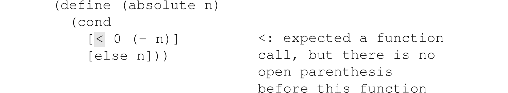
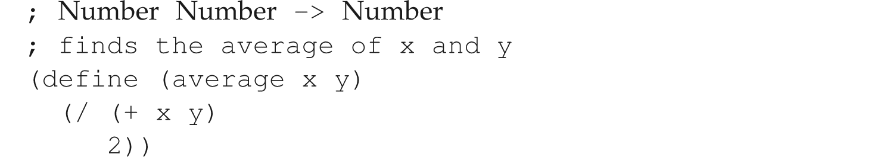
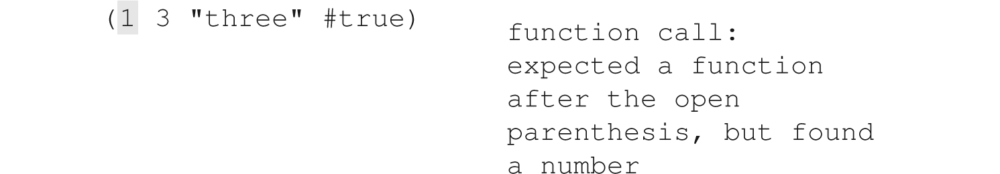
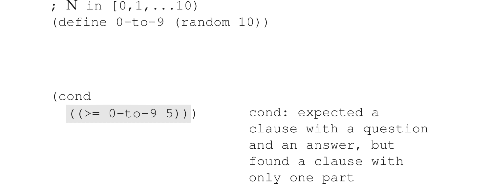
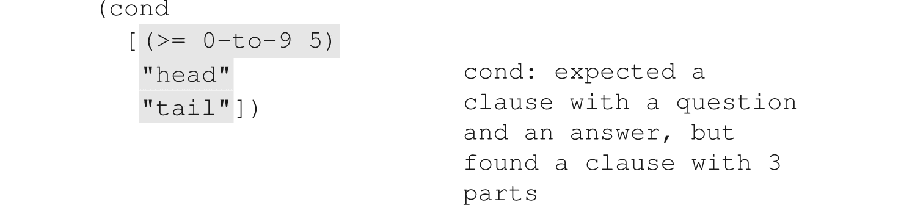
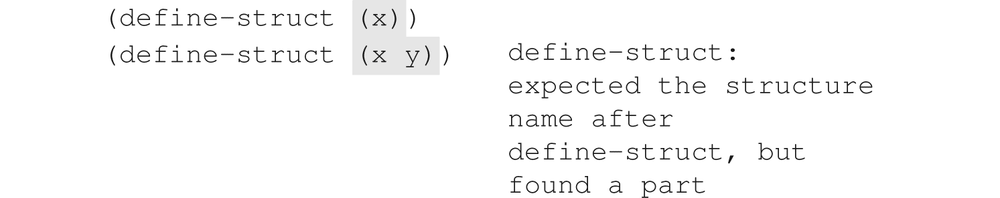
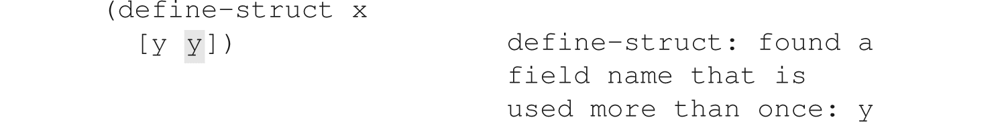
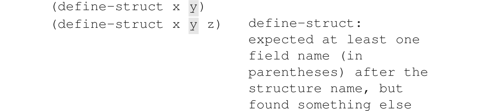

BSL Error Messages
A BSL program may signal many kinds of syntax errors. While we have developed BSL and its error reporting system specifically for novices who, by definition, make mistakes, error messages need some getting used to.
Below we sample the kinds of error messages that you may encounter. Each entry in one of the listings consists of three parts:
• the code fragments that signal the error message;
• the error message; and
• an explanation with a suggestion on how to fix the mistake.
Consider the following example, which is the worst possible error message you may ever see:

A cond expression consists of the keyword followed by an arbitrarily long sequence of cond clauses. In turn, every clause consists of two parts: a condition and an answer, both of which are expressions. In this definition of absolute, the first clause starts with <, which is supposed to be a condition but isn’t even an expression according to our definition. This confuses BSL so much that it does not “see” the open parenthesis to the left of <. The fix is to use (< n 0) as the condition.
The highlighting of < in the function definition points to the error. Below the definition, you can see the error message that DrRacket presents in the interactions window if you click RUN. Study the explanation of the error on the right to understand how to address this somewhat self-contradictory message. And now rest assured that no other error message is even remotely as opaque as this one.
So, when an error shows up and you need help, find the appropriate figure, search the entries for a match, and then study the complete entry.
Error Messages about Function Applications in BSL
Assume that the definitions area contains the following and nothing else:

Hit the RUN button. Now you may encounter the error messages below.
The application names f as the function, and f is not defined in the definitions area. Define the function, or make sure that the variable name is spelled correctly.

An open parenthesis must always be followed by a keyword or the name of a function, and 1 is neither. A function name is either defined by BSL, say +, or in the definitions area, say average.
This function call applies average to one argument, 7, even though its definition calls for two numbers.
Here average is applied to three numbers instead of two.
Functions defined by BSL must also be applied to the correct number of arguments. For example, make-posn must be applied to two arguments.
Error Messages about Wrong Data in BSL
The error scenarios below again assume that the definitions area contains the following:
; Number Number -> Number
; find the average of x and y
(define (average x y) …)
Remember that posn is a pre-defined structure type.
A function must be applied to the arguments it expects. For example, posn-x expects an instance of posn.
A function defined to consume two Numbers must be applied to two Numbers; here average is applied to Strings. The error message is triggered only when average applies + to these Strings. Like all primitive operations, + is a checked function.
Error Messages about Conditionals in BSL
This time we expect a constant definition in the definitions area:

Every cond clause must consist of exactly two parts: a condition and an answer. Here (>= 0-to-9 5) is apparently intended as the condition; the answer is missing.

In this case, the cond clause consists of three parts, which also violates the grammar. While (>= 0-to-9 5) is clearly intended to be the condition, the clause comes with two answers: "head" and "tail". Pick one or create a single value from the two strings.
A conditional must come with at least one cond clause and usually it comes with at least two.
Error Messages about Function Definitions in BSL
All of the following error scenarios assume that you have placed the code snippet into the definitions area and hit RUN.
A definition consist of three parts: the define keyword, a sequence of variable names enclosed in parentheses, and an expression. This definition consists of four parts; this definition is an attempt to use the standard notation from algebra courses for the header f (x) instead of (f x).
The sequence of parameters in a function definition must not contain duplicate variables.
In BSL a function header must contain at least two names. The first one is the name of the function; the remaining variable names are the parameters, and they are missing here.
The function header contains (x), which is not a variable name.
This function definition comes with two expressions following the header: x and y.
Error Messages about Structure Type Definitions in BSL
Now you need to place the structure type definitions into the definitions area and hit RUN to experiment with the following errors.

A structure type definition consists of three parts: the define-struct keyword, the structure’s name, and a sequence of names in parentheses. Here the structure’s name is missing.

The sequence of field names in a structure type definition must not contain duplicate names.

These structure type definitions lack the sequence of field names, enclosed in parentheses.